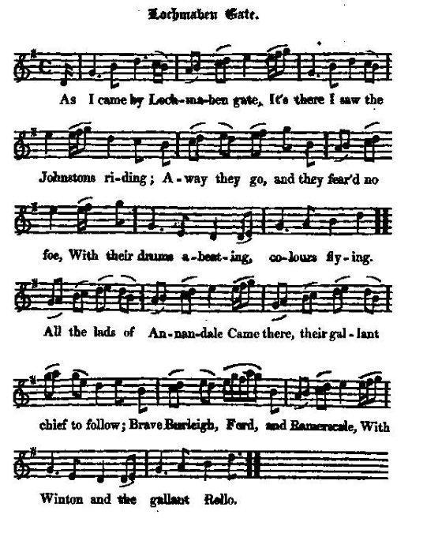

Lochmaben Gate
by Allan Cunningham
A Jacobite meeting on the occasion of a horse race on 29th of May 1714
Rassemblement de Jacobites lors d'une réunion hippique le 29 mai 1714
Tune - Melodie
"Lochmaben Gate"
from Hogg's "Jacobite Reliques" , vol.1, N°79, 1819
Sequenced by Christian Souchon

|
The present tune is utterly different from the wellknown "Lochmaben Hornpipe"
Hoggs remarks in a note to "Hame, hame : “Sore do I suspect that we are obliged to the same master’s hand” (Cunningham’s) “for it and the two preceding ones." ( "The waes of Scotland" and "Lochmaben Gate”) |
Le présent chant n'a rien à voir avec un autre air connu "Lochmaben Hornpipe".
Hoggs remarque dans une note à "Hame, hame : “ J'ai tout lieu de croire que nous devons à la plume du même maître (Cunningham) “cette pièce et les deux précédentes." ( "The waes of Scotland" and "Lochmaben Gate”). |

|
LOCHMABEN GATE [1]
1. As I came by Lochmaben gate, It's there I saw the Johnstons riding; Away they go, and they fear'd no foe, With their drums a-beating, colours flying. All the lads of Annandale Came there, their gallant chief to follow; Brave Burleigh, Ford, and Ramerscale, With Winton and the gallant Rollo. [2] 2. I ask'd a man what meant the fray ? " Good sir," said he, " you seem a stranger : This is the twenty-ninth of May ; Far better had you shun the danger. These are rebels to the throne, Reason have we all to know it; Popish knaves and dogs each one, Pray pass on, or you shall rue it." 3. I look'd the traitor in the face, Drew out my brand and ettled at him : " Deil send a' the whiggish race Downward to the dad that gat 'em !" Right sair he gloom'd, but naething said, While my heart was like to scunner, Cowards are they born and bred, Ilka whinging, praying sinner. 4. My bonnet on my sword I bare, And fast I spurr'd by knight and lady, And thrice I wav'd it in the air, Where a' our lads stood rank'd and ready. " Long live King James !" aloud I cried, " Our nation's king, our nation's glory!" " Long live King James!" they all replied, " Welcome, welcome, gallant Tory!" 5. There I shook hands wi' lord and knight, And mony a braw and buskin'd lady: But lang I'll mind Lochmaben gate, And a' our lads for battle ready. And when I gang by Locher Brigs, And o'er the moor, at e'en or morrow, I'll lend a curse unto the Whigs, That wrought us a' this dool and sorrow. Source: Jacobite Minstrelsy, published in Glasgow by R. Griffin & Cie and Robert Malcolm, printer in 1828. |
LOCHMABEN GATE [1]
1. En passant par Lochmaben Gate, J'ai vu les Johnston et leur clan. Ils chevauchaient tambours en tête. Leurs étendards claquaient au vent. Et tous les hommes d'Annandale Suivaient leur chef vaillant et beau; Avec Burleigh, Ford, Ramerscale Ainsi que Winton et Rollo. [2] 2. Je dis "Vont-ils à quelque joute?" C'est un passant qui me répond: "Vous n'êtes point d'ici sans doute. C'est le vingt-neuf mai . Partez-donc! Car ces gens-là sont des rebelles, Je me pique de le savoir, Vendus au Pape en kyrielles, Passez, il n'y a rien à voir!" 3. Alors moi, je fixe le traître, Fourrant mon glaive sous son nez: "Whig, vas-t-en au diable, ton maître, Car par lui tu fus engendré!" Il se tût, la mine féroce. Moi, j'en avais gros sur le cœur: Nés lâches ou lâches à force De bigoteries et de pleurs! 4. J'accroche ma toque à mon sabre, Et pars, donnant de l'éperon, Trois fois devant mes camarades, Tous alignés en rangs d'oignons, Je l'agite et crie "Vive Jacques! Gloire au vrai roi de ce pays!" "Vive ce roi!" répond la masse, "Sois le bienvenu, fier Tory!" 5. Je serre des mains dans la foule: Lords, dames dans leurs beaux atours. Lochmaben Gate, le temps s'écoule, Mais je me souviendrai toujours Des nôtres en rangs de bataille. Et quand, je passe à Locher Brigs, Je maudis cette valetaille Qui fit notre malheur, les Whigs! (Trad. Christian Souchon(c)2009) |
|
[1] This song is commemorative of
Southland Jacobitism
, and refers to a celebrated meeting of the Border partisans of the house of Stuart, which took place at Lochmaben in Dumfries-shire, on 29th May, 1714. to ascertain their strength, and to concert measures in aid of the insurrection which was then in contemplation by the Earl of Mar and others in the north, and which took place the following year. The meeting was held under the pretence of horse-racing; but the parties were at no pains to disguise the real object of it. Two plates, which were the prizes to be run for, had peculiar devices. The one had a woman with balances in her hand, the emblem of Justice, and over the head was " Justitia," and at a little distance, " Suum cuique." The other had several men in a tumbling posture, and one eminent person erected above the rest, with this inscription from Scripture, Ezekiel xxl. 27," I will overturn, overturn, overturn it; and it shall be no more, until he come whose right it is, and I will give it him." After the race, the leaders, and many more of the Jacobite gentry, such as the Maxwells of Tinwald, Johnston of Wamphray, Carrutners of Ramerscales, the Master of Burleigh, went to
the cross
, and in presence of hundreds, with drums beating and colours flying, drank their King's health upon their knees. Such was the fury of their zeal, if any one refused to drink the toast, he was d--d to hell by the Master of Burleigh. This precious partisan had only a few weeks before made his escape from Edinburgh Jail, where he had been lying under sentence of death for murder.
[2] A song giving the historian assistance : The previous note sums up a note by Hogg in his "Jacobite Relics", consisting in a quotation of Peter Rae's "History of the Late Rebellion" (= the rebellion of 1715, published in Dumfries in 1718). He adds: "Mr Rae does not mention that the Lords Winton and Rollo were present at [this] meeting. I find, however, from another part of the "History", that they were both in Annandale that year ; and it is most probable that they had been at this notable race, else the elated ballad-monger would not have included them." (As already mentioned, Hogg suspects that Cunningham is that ballad-monger). |
[1] Ce chant commémore le
Jacobitisme du sud de l'Ecosse
(Border) et a trait à un fameux rassemblement de partisans des Stuarts dans cette région, qui se tint à Lochmaben dans le comté de Dumfries, le 29 mai 1714, dans le but de s'assurer de leurs forces et de convenir des mesures à prendre pour appuyer l'insurrection projetée par le Comte de Mar et d'autres plus au nord et qui eut lieu l'année suivante. Le rassemblement prit pour prétexte une course de chevaux, mais les organisateurs ne se donnèrent pas la peine de déguiser l'objet réel de cette réunion. Les deux assiettes, enjeu de la course, portaient des devises très particulières. L'une montrait une femme portant une balance, l'emblème de la justice était surmontée du mot "Justitia" et, un peu plus loin "Suum cuique" (à chacun ce qui lui appartient). L'autre montrait plusieurs personnages prostrés et un autre dressé majestueusement au dessus d'eux avec cette citation d'Ezéchiel (xxi, 32): Ruine, ruine et ruine, voilà ce que j'en ferai. Il sera anéanti jusqu'à ce que vienne celui à qui appartient le jugement et à qui je le livrerai." Après la course, les meneurs ainsi que de nombreux nobles Jacobites, tels que les Maxwell de Tinwald, Johnston de Wamphray, Carrutner de Ramerscales, le Maître (l'Ainé) de Burleigh, se rendirent au
"mercat cross"
et, devant des centaines de spectateurs, au milieu des oriflammes et des roulements de tambours, burent, à genoux, à la santé de leur roi. Ils étaient en proie à un tel fanatisme que ceux qui refusaient de porter le toast étaient solennellement voués à l'enfer par le Maître de Burleigh. Ce précieux partisan s'était échappé quelques semaines auparavant de la prison d'Edimbourg, où, condamné à mort pour meurtre, il attendait son exécution.
[2] La chanson au secours de l'histoire : La note qui précède résume celle rédigée par Hogg dans ses "Reliques Jacobites", qui est elle-même une longue citation de l'"Histoire de la dernière rébellion", (celle de 1715), de Peter Rae, publiée à Dumfries en 1718. Il ajoute: "M. Rae oublie de mentionner les Lords Winton et Rollo parmi les personnalités qui prirent part à la réunion. Je lis toutefois dans un autre passage de l'"Histoire", qu'ils étaient tous les deux en Annandale cette année-là. Et il est plus que probable qu'ils assistèrent à cette mémorable course, sinon le faiseur de ballades n'en aurait pas parlé." (Comme on l'a dit, Hogg pense que ce dernier n'est autre que Cunningham). |
|
|
|